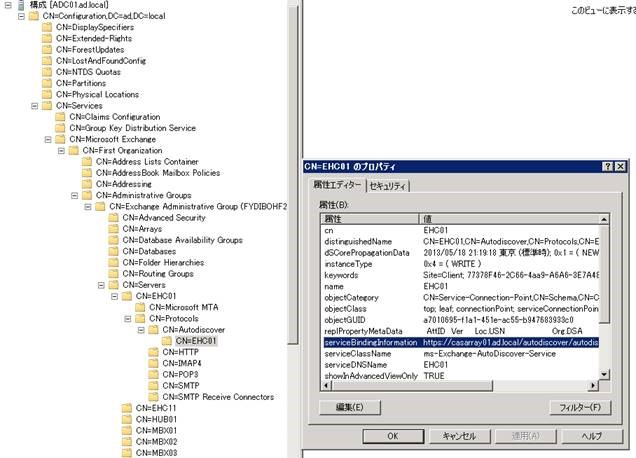

こんにちは、Exchange サポート チームの竹本です。
Exchange 2013 SP1 が先日リリースされた中、今回は少し今更ネタとなりますが、Exchange 2013 でも重要な Autodiscover の動作についてのご紹介です。
Autodiscover の動作なんてもう完璧！ という方も、是非是非ご参照ください。
Autodiscover 自体は Exchange 2007 以降、Outlook 2007 以降で利用可能な機能となり、Outlook クライアントはこの機能を利用してプロファイルの自動構成を行ったり、空き時間情報を取得するために必要な URL の情報を Exchange サーバーから取得したりしています。
Title : 自動検出サービスについて
URL : http://technet.microsoft.com/ja-jp/library/bb124251(v=exchg.141).aspx
例えば Outlook 2010 クライアントが Autodiscover 接続を行う際、具体的には以下の順序で接続が試みられます。
(1) AD に登録された SCP (ServiceConnectionPoint) に設定された URL (通常、CAS サーバー名や CAS アレイ名等が入ります)
(2) https://<ユーザーの SMTP ドメイン>/autodiscover/autodiscover.xml
(3) https://autodiscover.<ユーザーの SMTP ドメイン>/autodiscover/autodiscover.xml
(4) <SMTP ドメイン> のローカルの XML ファイル
(5) http://autodiscover.<ユーザーの SMTP ドメイン>/autodiscover/autodiscover.xml へのリダイレクト
(6) _Autodiscover._tcp.<ユーザーの SMTP ドメイン> (SRV レコード)
ではここで、いくつかのワードや詳細動作について取り上げてみましょう。
- SCP って何？
Service Connection Point の略、つまりは “サービスへの接続場所” を示すものです。これは Exchange 2007 以降の CAS サーバーの数だけ存在します。
では実データはどこにあるのかというと Active Directory (AD) の構成パーティションに存在しており、これは ADSI Editor を使用して以下の場所から確認することが可能です。
[Configuration] - [CN=Configuration,DC=example,DC=local] - [CN=Services] - [CN=Microsoft Exchange] - [CN=<組織名>] - [CN=Administrative Groups] - [CN=Exchange Administrative Group (FYDIBOHF23SPDLT)] - [CN=Servers] - [CN=<CAS サーバー名>] - [CN=Protocols] - [CN=Autodiscover] - [CN=<CAS サーバー名>]
例えば以下のような感じです。

Outlook クライアントは AD からこの SCP の一覧を読み込み、実際にアクセス先となる SCP の一覧を決定します。
- どの SCP にアクセスするの？
ここで重要となってくるのは、クライアントがどの AD サイトに所属しているのか、という点です。
Outlook は取得した SCP の一覧から、まず SCP の Keyword 属性の値を確認します。この Keyword 属性には通常サイト名が設定されているため、クライアントは自身が所属する AD サイトの名前が登録された Keyword 属性があるか否かを、まず確認します。自身のサイト名を Keyword 属性に含む SCP が存在した場合、Outlook はその SCP オブジェクトの ServiceBindingInformation 属性に登録された URL に対し、Autodiscover のリクエストを送信します。
一方、いずれの SCP オブジェクトのKeyword 属性にもクライアントの AD サイト名が登録されていない場合、Outlook は LDAP クエリにより取得し生成されたリストの一番上から順にアクセスを試み、リスト内のいずれかの SCP に接続します。なお LDAP クエリ実行時には特にソートの指定はされないため、たいていの場合は古い順に SCP が返されますが、厳密にはランダムな順序となります。
つまり、Autodiscover のアクセス先は AD サイトの構成次第でカスタマイズが可能、という事になります。
また上述したそれぞれの属性は Set-ClientAccessServer コマンドにて設定が可能となっており、Keyword 属性は AutodiscoverSiteScope の値、ServiceBindingInformation 属性は AutodiscoverServiceInternalUri の値にそれぞれ該当します。
AutodiscoverSiteScope の設定を使用してアクセス先となる SCP をコントロールする手順は以下にも記載がありますので、是非ご参照ください。
Title : サイトの類似性を使用するための自動検出サービスを構成する
URL : http://technet.microsoft.com/ja-jp/library/aa998575(v=exchg.141).aspx
* ちなみに Outlook がどの SCP に接続しているのかといった点については、Outlook アイコンを Ctrl キーを押しながらクリックすると表示される “電子メールの自動構成のテスト” から確認することが可能です。
- ワークグループ端末の場合は？
ワークグループ端末の場合、AD から SCP の一覧を取得することはできません。
つまり、上述の (2) からの接続を試みる動作となります。そのため基本的には Autodiscover.<SMTP ドメイン> という A レコードなり Hosts ファイルの記載なりが必要、という事になります。
- リソース フォレスト / アカウント フォレスト構成の場合は？
この場合、多くはアカウント フォレストにクライアント端末とユーザー アカウントが存在し、リソース フォレストに Exchange 2010 が存在する状態で、”リンクされたメールボックス” の機能を用い、ユーザーはメールボックスにアクセスしています。
そのためクライアント端末が Autodiscover の接続を正しく行えるためには、アカウント フォレストに SCP が作成されているか、SCP の取得が失敗することを前提に (2) 以降の DNS レコードが用意されているか、どちらかが必要となります。
前者、SCP の作成を実現するためのコマンドが Export-AutoDiscoverConfig というコマンドです。リソース フォレスト内の Exchange 管理シェルにてこのコマンドを実行することで、アカウント フォレストに、この Exchange に接続するための SCP を生成することができます。
Export-AutoDiscoverConfig -TargetForestDomainController <アカウント フォレストの DC 名> -TargetForestCredential:(get-credential)
Export-AutodiscoverConfig の詳細は、以下をご参照ください。
Title : Export-AutoDiscoverConfig
URL : http://technet.microsoft.com/ja-jp/library/aa998832(v=exchg.141).aspx
上記にて作成されたアカウント フォレストの SCP では、その接続先となる ServiceBindingInformation 属性の値には、リソース フォレストに接続するための LDAP URL (例 : LDAP://example.com) が設定されます。
そしてクライアント端末はまず、この LDAP URLを使用してリソース フォレストの DC に接続します。続けて LDAP 要求を行い、実際に Exchange サーバーが所属するリソース フォレストで設定された SCP の値 (ServiceBindingInformation 属性) を、改めて取得する動作となります。
この時、Exchange サーバーが所属するフォレストにおいて複数の SCP が存在した場合、アカウント フォレストのクライアントはどの SCP に対して接続を試みることになるでしょうか？
結論から言いますと、これも Keyword 属性 (AutodiscoverSiteScope) の設定に依存します。
つまり、リソース フォレストの CAS01 という サーバーで、AutodiscoverSiteScope に “AccountForest01” を設定していた場合、アカウント フォレスト内の “AccountForest01” サイトに存在するクライアント端末は、必ずリソース フォレストの CAS01 というサーバーの AutodiscoverServiceInternalUri に対して、接続を試みることとなります。
- Autodiscover の結果がなかなか反映されない
Outlook Anywhere や各種仮想ディレクトリの設定等を変更したにもかかわらず、Autodiscover で自動取得される設定内容がなかなか更新されない (古い情報のまま) という話をお聞きすることがあります。
そんな時は一度、対象のサーバー上で MSExchangeAutodiscoverAppPool のリサイクルをお試しください。Exchange 2010 であれば CAS サーバー上でのみ、Exchange 2013 の場合は CAS サーバーとメールボックス サーバー双方で実施します。
* アプリケーション プールのリサイクル中、一時的に Autodiscoverアクセスに支障が生じることがありますので、基本的には業務時間外に実施いただくことをご検討ください。
今回は以上となりますが、Exchange サーバーを構築、運用いただいている皆様において、少しでも参考になりましたら幸いです。
今後も当ブログおよびサポート チームをよろしくお願いいたします。